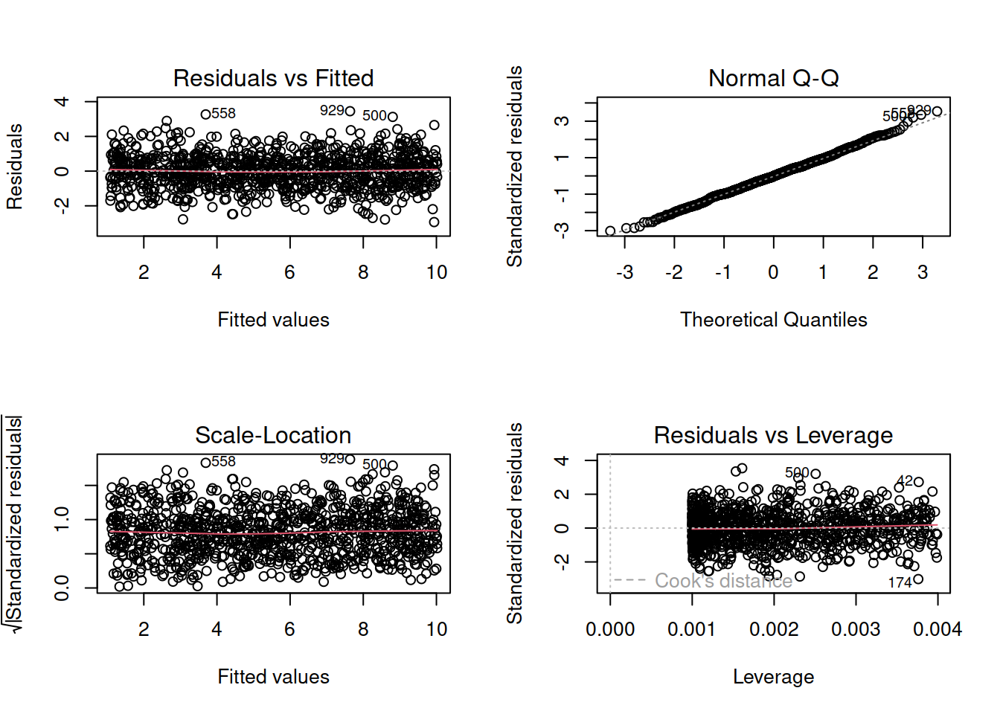
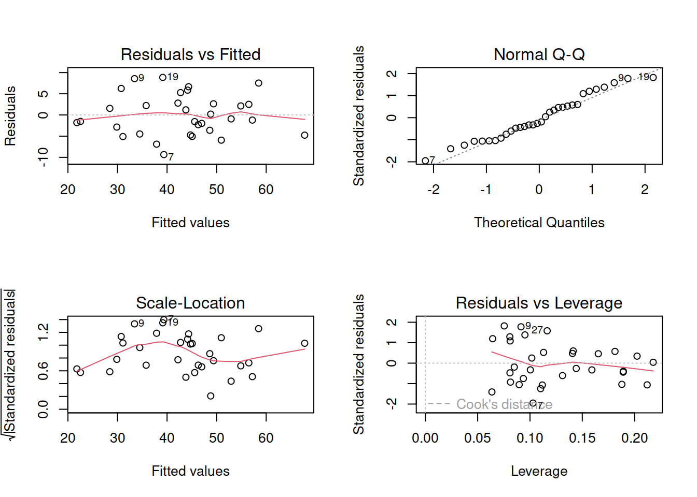

08A: Multiple Linear Regression
Making Valid Inferences
So far, we have been fitting and interpreting our regression models. In each case, we first specified the model, then visually explored the marginal distributions and relationships of variables which would be used in the analysis. Then, once we fitted the model, we began to examine the fit by studying what the various parameter estimates represented, and the spread of the residuals. We saw these in the output of summary() of a model - they were shown in the parts of the output inside the red boxes in Figure @ref(fig:mlroutput)).
We also discussed drawing inferences using our model estimates, as well as using a model to make predictions. However, we should really not have done this prior to being satisfied that our model meets a certain set of assumptions. All of the estimates, intervals and hypothesis tests (see Figure @ref(fig:mlroutputhyp)) resulting from a regression analysis assume a certain set of conditions have been met. Meeting these conditions is what allows us to generalise our findings beyond our sample (i.e., to the population).

Assumptions
Assumptions: The broad idea
All our work here is in aim of making models of the world.
- Models are models. They are simplifications. They are therefore wrong.
- Our residuals ( \(y - \hat{y}\) ) reflect everything that we don’t account for in our model.
- In an ideal world, our model accounts for all the systematic relationships. The leftovers (our residuals) are just random noise.
- If our model is mis-specified, or we don’t measure some systematic relationship, then our residuals will reflect this.
We check by examining how much “like randomness” the residuals appear to be (zero mean, normally distributed, constant variance, i.i.d (“independent and identically distributed”). These ideas tend to get referred to as our “assumptions”.
- While we will never know whether our residuals contain only randomness (we can never observe everything), our ability to generalise from the model we fit on sample data to the wider population relies on these assumptions.
Assumptions in a nutshell
In using linear regression, we have assumptions about our model in that we assume that modelling the outcome variable as a linear combination of the explanatory variables is an appropriate thing to do.
We also make certain assumptions about what we have left out of our model - the errors component.
Specifically, we assume that our errors have “zero mean and constant variance”.
- mean of the residuals = zero across the predicted values on the linear predictor.
- spread of residuals is normally distributed and constant across the predicted values on the linear predictor.
Assumptions in R
We can get a lot of plots for this kind of thing by using plot(model)
Here’s what it looks like for a nice neat model:
::: {.cell layout-align=“center”}
plot(my_model)
Some people don’t like the higher-level/broad picture approach to thinking about assumptions of our analysis, and prefer a step-by-step list of things to make sure they tick off. For those of you who would like this, you can find our page on “assumptions & diagnostics: the recipe book way”.
:::
Recall our last model (from Question C5), in which we fitted a model assessing how we might explain wellbeing by the combination of social interactions, routine, and outdoor time.
The code for this model is given below.
Let’s take a look at the diagnostic plots given by passing the model to the plot() function.
mwdata = read_csv(file = "https://uoepsy.github.io/data/wellbeing.csv")
wbmodel2 <- lm(wellbeing ~ social_int + routine + outdoor_time, data=mwdata)
plot(wbmodel2)
The model doesn’t look too bad.
- The top left plot (residuals vs fitted) shows a reasonably straight red line, which indicates that the mean of the residuals is close to zero across the fitted values.
- The top right plot (QQplot of residuals) shows that the residuals are fairly close to the dotted line, indicating they follow close to a normal distribution (QQplots plot the values against the associated percentiles of the normal distribution. So if we had ten values, it would order them lowest to highest, then plot them on the y against the 10th, 20th, 30th.. and so on percentiles of the standard normal distribution (mean 0, SD 1)).
- The bottom left plot (scale location plot) shows the square-root of the absolute value of the standardised residuals. This allows us to examine the extent to which the variance of the residuals changes accross the fitted values. A straight red line indicates reasonably constant variance. It’s a bit wiggly here!
- The bottom right plot (residuals vs leverage plot) shows the extent to which datapoints that have higher residuals (are far away from our regression line) have the potential to unduly influence our line. We’ll look at this idea of influence later on.
Question Optional: D1
We can perform tests to examine how (un)likely we would be to see some residuals like those we have got, if they were sampled from a normally distribution.
The Shapiro-Wilk test is a test against the alternative hypothesis that the residuals were not sampled from a normally distributed population. We can perform this test quickly in R using shapiro.test(residuals(modelname)).
Conduct this test now on the model we just plotted above. What do you conclude?
Question Optional: D2
The ncvTest(model) function (from the car package) performs a test against the alternative hypothesis that the error variance changes with the level of the fitted value (also known as the “Breusch-Pagan test”). \(p >.05\) indicates that we do not have evidence that the assumption has been violated.
Try conducting this test now, on the same model as the previous question.
Multicollinearity
For the linear model with multiple explanatory variables, we need to also think about multicollinearity - this is when two (or more) of the predictors in our regression model are moderately or highly correlated.Recall our interpretation of multiple regression coefficients as
This interpretation falls down if predictors are highly correlated because if, e.g., predictors \(x_1\) and \(x_2\) are highly correlated, then changing the value of \(x_1\) necessarily entails a change the value of \(x_2\) meaning that it no longer makes sense to talk about holding \(x_2\) constant.
We can assess multicollinearity using the variance inflation factor (VIF), which for a given predictor \(x_j\) is calculated as:
\[ VIF_j = \frac{1}{1-R_j^2} \\ \]
Where \(R_j^2\) is the coefficient of determination (the R-squared) resulting from a regression of \(x_j\) on to all the other predictors in the model (\(x_j = x_1 + ... x_k + \epsilon\)).
The more highly correlated \(x_j\) is with other predictors, the bigger \(R_j^2\) becomes, and thus the bigger \(VIF_j\) becomes.
The square root of VIF indicates how much the SE of the coefficient has been inflated due to multicollinearity. For example, if the VIF of a predictor variable were 4.6 (\(\sqrt{4.6} = 2.1\)), then the standard error of the coefficient of that predictor is 2.1 times larger than if the predictor had zero correlation with the other predictor variables. Suggested cut-offs for VIF are varied. Some suggest 10, others 5. Define what you will consider an acceptable value prior to calculating it.
In R, the vif() function from the car package will provide VIF values for each predictor in your model.
Question Optional: D3
Calculate the variance inflation factor (VIF) for the predictors in the model.
Write a sentence summarising whether or not you consider multicollinearity to be a problem here.
Individual Case Diagnostics
In linear regression, individual cases in our data can influence our model more than others. There are a variety of measures we can use to evaluate the amount of misfit and influence that single observations have on our model and our model estimates.
THERE ARE NO HARD RULES FOR WHAT COUNTS AS “INFLUENTIAL” AND HOW WE SHOULD DEAL WITH THESE CASES
There are many ways to make a cake. recipes can be useful, but you really need to think about what ingredients you actually have (what data you have).
You don’t have to exclude influential observations. Try to avoid blindly following cut-offs, and try to think carefully about outliers and influential points and whether you want to exclude them, and whether there might be some other model specification that captures this in some estimable way. Do these observations change the conclusions you make (you can try running models with and without certain cases).
There are various measures of outlyngness and influence. Here are a few. You do not need to remember all of these!
Regression outliers:
A large residual \(\hat \epsilon_i\) - i.e., a big discrepancy between their predicted y-value and their observed y-value.
- Standardised residuals: For residual \(\hat \epsilon_i\), divide by the estimate of the standard deviation of the residuals. In R, the
rstandard()function will give you these - Studentised residuals: For residual \(\hat \epsilon_i\), divide by the estimate of the standard deviation of the residuals excluding case \(i\). In R, the
rstudent()function will give you these. Values \(>|2|\) (greater in magnitude than two) are considered potential outliers.
High leverage cases:
These are cases which have considerable potential to influence the regression model (e.g., cases with an unusual combination of predictor values).
- Hat values: are used to assess leverage. In R, The
hatvalues()function will retrieve these.
Hat values of more than \(2 \bar{h}\) (2 times the average hat value) are often worth looking at. \(\bar{h}\) is calculated as \(\frac{k + 1}{n}\), where \(k\) is the number of predictors, and \(n\) is the sample size.
High influence cases:
When a case has high leverage and is an outlier, it will have a large influence on the regression model.
- Cook’s Distance: combines leverage (hatvalues) with outlying-ness to capture influence. In R, the
cooks.distance()function will provide these.
There are many suggested Cook’s Distance cut-offs. - DFFit: the change in the predicted value at the \(i^{th}\) observation with and without the \(i^{th}\) observation is included in the regression.
- DFbeta: the change in a specific coefficient with and without the \(i^{th}\) observation is included in the regression.
- DFbetas: the change in a specific coefficient divided by the standard error, with and without the \(i^{th}\) observation is included in the regression.
- COVRATIO: measures the effect of an observation on the covariance matrix of the parameter estimates. In simpler terms, it captures an observation’s influence on standard errors. Values which are \(>1+\frac{3(k+1)}{n}\) or \(<1-\frac{3(k+1)}{n}\) are sometimes considered as having strong influence.
You can get a whole bucket-load of these measures with the influence.measures() function.
influence.measures(my_model)will give you out a dataframe of the various measures.
summary(influence.measures(my_model))will provide a nice summary of what R deems to be the influential points.
Question Optional: D4
Plot the Cook’s Distance values, does it look like there may be any highly influential points?
(You can use plot(model, which = 4) and plot(model, which = 5)).